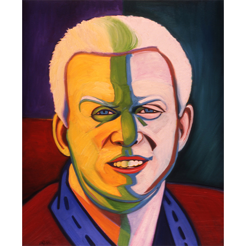

Notes
This work was commissioned for the Metropolitan Museum of Sports, a conceptual art initiative developed for Disney’s ESPN Zone in New York. The work was part of a site-specific installation, integrated into the architectural and thematic environment of ESPN Zone rather than presented within a traditional gallery setting.
This work references Henri Matisse’s La Raie Verte.

Dimensions are approximate; measurements used here are based on visual comparison and available documentation.